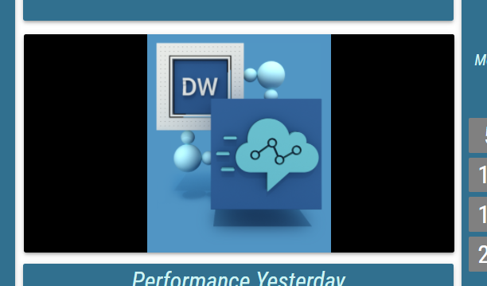

Calendar¶
The Calendar presents a historical view of a specific calculation. Each day in the configured time period is displayed as a tile. The color of the tile indicates to which range value of the day falls under. Multiple months can be displayed by a single calendar segment.
For general information about this segment, see Calendar chapter.
- Calculation
For more general calculation options, see Editing Scalar-Valued Calculations chapter.
The calculation options control, how the displayed values are calculated. Only calculation functions that produce numeric results can be selected in calendar.- Period Settings
This group defines period over which we want to display values.
- Period
Required
A desired type of time period to be displayed in calendar.
Available options are:- Month
A month like calendar view will be displayed.
- Week
A week like calendar view will be displayed.
- Number of Displayed Periods
Required
The number of months/weeks to display.
- Displayed Period/Newest Displayed Period
Required
When only one period should be displayed this option defines which period it will be.
When multiple periods should be displayed this option defines which will be the newest displayed period.
Available options are:- This Period
The calendar displays the currently ongoing Month or Week.
- Last Period
The calendar displays the previous Month or Week.
- Other Period
If this option is chosen, how far into the past the Displayed Period/Newest Displayed Period is has to be provided.
- Value of the Day
Required
Defines, what result should be used in the Calendar.
Available options are:- First
The first recorded result of each day is displayed.
- Last
The last recorded result of each day is displayed.
- Min
The minimal recorded result of each day is displayed.
- Max
The greatest recorded result of each day is displayed.
- Delta
The difference between the Last result of the day and the one before is displayed.
- Weekdays
The Calendar can be configured to display only certain relevant days of the week.
- First Day Of Week
Inheritable
Specifies, which day should be displayed and considered as first of each week.
Available options are Monday - Sunday
- Monday, …, Sunday
Inheritable
Visibility of each day can be configured with its corresponding dropdown. Non-Working days are hidden.
Available options are Working Day and Non-Working Day
- Appearance
The style of a Calendar
- Background Color
For more information see Color Field section.
Color of the background.
- Headers
Visual configuration of calendar headers.
- Day Headers
Inheritable
Controls, whether the day of the week should be displayed above all calendar day columns.
Available option are Show and Hide
- Period Headers
Inheritable
Controls, whether the displayed time period should be described in header.
Available option are Show and Hide
- Height
Inheritable
Height of the headers, that is measured in permilles of the entire Layout’s height.
- Text Color
Inheritable
For more information see Color Field section.
Color of the text.
- Background Color
Inheritable
For more information see Color Field section.
Color of the background.
- Text Style
Inheritable
For more information see Text Style section.
Type of font to use and whether bold or italic text should be used.
- Font Size Coefficient
Inheritable
The font size is calculated by multiplying available height for the text by font size coefficient.
- Day Numbers
Visual configuration of day numbers.
- Visibility
Inheritable
Whether day numbers should be visible.
- Content
Inheritable
Content of the day numbers.
Available options are Title, Paging Info and Title and Paging Info
- Position
Position of the day numbers. If Float on Top or Float on Bottom is selected, day numbers float over the segment which may cause overlapping.
Available options are Float on Top, Float on Bottom, Top and Bottom
- Height
Inheritable
Height of day numbers.
- Text Color
Inheritable
For more information see Color Field section.
The color of the day number, displayed in the tile.
- Background Color
Inheritable
For more information see Color Field section.
Color of the day numbers background.
- Text Style
Inheritable
For more information see Text Style section.
Type of font to use and whether bold or italic text should be used.
- Font Size Coefficient
Inheritable
The font size is calculated by multiplying available height for the text by font size coefficient.
- Horizontal Alignment
Inheritable
Position of day numbers on horizontal axis.
Available options are Left, Center and Right
- Padding
Inheritable
Available only when the horizontal alignment is Left or Right
The size of a padding between the day numbers and day numbers’s border in “em” units. 1 em equals to the font size of the associated text.
The padding is applied to the side where the text is horizontally aligned.
- Values
Visual configuration of calendar’s day tiles.
- Presentation Type
Required
Defines how value should be presented.
Available options are:- Alphanumeric
The value is presented as a pure text, without any additional graphical elements.
- Semaphore
The value is enveloped in a colored circle. The circle changes color based on configured conditional styles. The semaphore is used, when the state is more important than the value itself.
- Circle
The value is accompanied by a circle indicator. The indicator represents the level of fulfillment of a configured goal.
- Semi Circle
The value is accompanied by a semi-circle indicator. The indicator represents the level of fulfillment of a configured goal.
- Horizontal/Vertical Bar
The value is accompanied by a rectangular indicator. The indicator represents the level of fulfillment of a configured goal.
- Image
An image is applied.
- Static Color
A static color is applied.
Figure 1: Presentation types.
- Display Format
Required
Format in which value should be displayed. When Raw is selected, the value is displayed without any transformation.
- Text Color
Inheritable
According to the selected presentation type
For more information see Color Field section.
Color of the text.
- Semaphore/Circle/Semi Circle/Bar Color
Inheritable
According to the selected presentation type
For more information see Color Field section.
Color of the Semaphore/Circle/Semi Circle/Bar.
- Empty Bar Color
Inheritable
Only if Horizontal/Vertical Bar is selected as a presentation type
For more information see Color Field section.
Background color of the bar itself.
- Background Color
Inheritable
Not available, if the “Image” presentation type is selected
For more information see Color Field section.
Color of the background.
- Text Style
Inheritable
Not available, if the “Image” presentation type is selected
For more information see Text Style section.
Type of font to use and whether bold or italic text should be used.
- Text Sizing
Inheritable
Not available, if the “Image” or “Static color” presentation type is selected
Controls, how font size is calculated.
Available options are:- Regular
Font is sized relatively to calendar’s cell height.
In case of Circle, Semi Circle and Semaphore presentation type, font is sized relatively to Circle’s/Semi Circle’s/Semaphore’s height.
- Best Fit
Font is dynamically sized to always fit inside calendar’s cell.
- Font Size Coefficient
Inheritable
Available only if “Regular” is selected as a text sizing
Not available if “Image” or “Solid Color” is selected as a presentation type
The font size is calculated by multiplying available height for the text by font size coefficient. In the case of semicircle, circle and semaphore presentation type combined with the regular sizing, available height is defined by the height of the circle/semicircle/semaphore. Otherwise, by the height of the container.
- Choose Display Range Min Manually
Available only when “Circle”, “Semi Circle” or “Bar” presentation type is selected.
Whether the minimum on the value range is defined manually.- Min
Value, that defines the minimum on the value range.
- Choose Display Range Max Manually
Available only when “Circle”, “Semi Circle” or “Bar” presentation type is selected.
Whether the maximum on the value range is defined manually.- Max
Value, that defines the maximum on the value range.
- Horizontal Alignment
Controls, where the value should be aligned on the horizontal axis.
Available options are Left, Center and Right
Available only when the text sizing is set to Regular and presentation type to Alphanumeric
- File
Available only if the “Image” presentation type is selected
For more information see Static content chapter.
Relative path of the image, that should be displayed. Using the {{value}} placeholder in the path, an image can dynamically change, based on the KPI value.
- Image Horizontal Alignment
Available only if the “Image” presentation type is selected
Controls, where the image should be aligned on the horizontal axis.
Available options are Left, Center and Right
- Image Vertical Alignment
Available only if the “Image” presentation type is selected
Controls, where the image should be aligned on the vertical axis.
Available options are Top, Middle and Bottom
- Image Size
Available only if the “Image” presentation type is selected
Decides, how the image is adjusted to the Segment’s size.- Cover
The image is resized to cover the whole Segment, without deforming the image. No uncovered spaces are present. However one of image’s axis may overlap outside of the Segment’s boundaries.
Figure 1: Cover

- Contain
The image The image is resized to be fully displayed, in largest possible size, without deforming the image. Uncovered spaces, filled with the Background Color, are present.
Figure 2: Contain

- Fill
The image fully fills the entire Segment’s size. The image may be deformed. No uncovered spaces or overlapping occurs.
Figure 3: Fill

- Custom
When selected, Custom Size Height and Custom Size Width fields are displayed. These fields define size of the image in percentages of the Segment’s size.
Figure 4: Custom

- Effects and Filters
Available only if the “Image” presentation type is selected
Controls, adjusting the image, such as Brightness, Contrast, Opacity etc. Click to revert image to its default values.
- Custom Null Value
Inheritable
A custom value that is displayed when the value is not available.
- Corner Radius
Inheritable
Corner radius of the values can be adjusted with a slider or a text field for a custom value. Measured in permilles of the entire Layout’s height.
- Conditional Styles
For more information see Conditional Styles chapter.
Conditional Styles are used to modify appearance of the value based on its data.